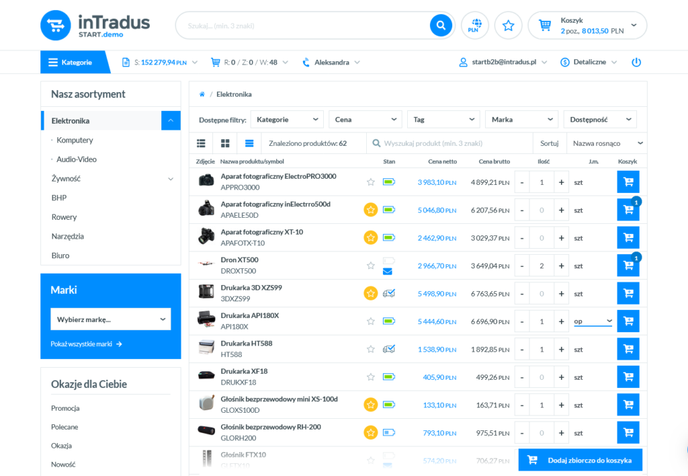

inTradus – platforma B2B
inTradus to platforma sprzedażowa umożliwiająca rozwój internetowego kanału sprzedaży dla klientów biznesowych.
Integracja z Subiektem nexo PRO pozwala na przekazywanie zamówień do systemu ERP i udostępnianie klientom aktualnej oferty.
- Obsługa zamówień internetowych.
- Prezentacja oferty dla kontrahentów.
- Automatyzacja procesów sprzedaży.
- Rozwiązanie dostępne w modelu SaaS.